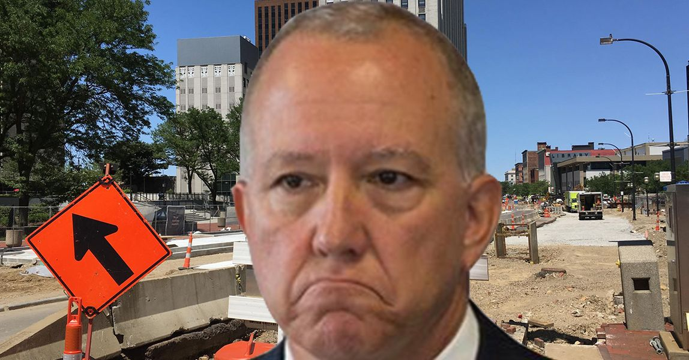

Timeline photos
We now have national-level activists in Akron for #JaylandWalker. They have been arrested.
Police are militarizing our hospitals and streets. This city in on fire and we have a mayor who has been out of his league since day one.
We are leaderless in a national catastrophe.
There have been calls to fire the Deputy Mayor for Public Safety, Charles A. Brown. That's energy we need to direct UP one level.
WE MUST FIRE THE MAYOR.
Then you can fire Charles Brown, the police chief and whoever else you want IN AN INSTANT.
WE MUST BUILD A MOVEMENT TO PRIMARY THE MAYOR IN THE MAY 2023 ELECTION. (he's preparing for this by raising the campaign contribution levels so his rich friends can fund him more.)
FIRE DAN HORRIGAN.